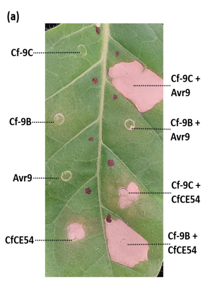

Cf-9 (Hcr9-9C) is a cell-surface receptor-like protein (RLP) of currant tomato that confers race-specific resistance to the leaf mould fungus Fulvia fulva (Cladosporium fulvum) strains carrying the avirulence gene Avr9. The 863-residue type I transmembrane glycoprotein has a signal peptide, an N-terminal cysteine-rich flanking domain, 27 extracellular leucine-rich repeats (LRRs), a single transmembrane segment and a short cytoplasmic tail with no kinase domain. It is heavily N-glycosylated and resides in the plasma membrane, with its ectodomain facing the apoplast where the fungus grows and secretes the AVR9 cystine-knot peptide. Recognition specificity for AVR9 maps to the central LRRs (10-18), and membrane-proximal cytosolic residues are needed for signalling. AVR9 perception triggers a hypersensitive response (localized cell death) and other defence outputs that restrict fungal growth. Lacking its own kinase, Cf-9 signals in a complex with receptor-like kinases: after AVR9 elicitation the co-receptor BAK1/SERK3 associates with Cf-9, as described for the paralogous Cf-4/SOBIR1 system. Whether Cf-9 binds AVR9 directly is unresolved, because a high-affinity AVR9 binding site is present on plasma membranes of tomato lines with or without Cf-9. Cf-9 lies in a cluster of five Hcr9 paralogues (Cf-9A to Cf-9E) at the short arm of chromosome 1; it arose by intragenic recombination, and a second natural AVR9-recognizing allele (9DC) occurs in wild populations.
| GO Term | Evidence | Action | Reason |
|---|---|---|---|
|
GO:0002238
response to molecule of fungal origin
|
IEP
PMID:26768363 Transcriptional and posttranscriptional regulation of the to... |
KEEP AS NON CORE |
Summary: Based on Cf-9 transcript induction by the fungal elicitor AVR9 (10.8-54.7 fold in Cf-9/Avr9 seedlings) and its temperature sensitivity [PMID:26768363].
Reason: The IEP evidence (transcriptional induction of Cf-9 by AVR9) does support a change in state in response to a fungal molecule, and functionally Cf-9 is the receptor through which tomato responds to AVR9, so the term is not wrong. It is, however, a broad response term grounded on an expression readout rather than on what the protein does; the mechanistic role (perception of AVR9 and initiation of cell-surface immune receptor signalling) is captured in core_functions. Kept as non-core.
Supporting Evidence:
PMID:26768363
Expression of the Cf-9 gene was 10.8-54.7 folds higher in the Cf-9/Avr9 tomato lines than in the Cf-9 lines depending on the seedling age, indicating that the Cf-9 gene expression was strongly induced by Avr9.
|
|
GO:0005515
protein binding
|
IPI
PMID:26315781 A mutational analysis of the cytosolic domain of the tomato ... |
REMOVE |
Summary: Yeast two-hybrid interaction between the Cf-9 cytosolic domain (domain G) and the tomato thioredoxin CITRX (Q9LKW0) [PMID:26315781].
Reason: Generic protein binding is uninformative and does not describe a Cf-9 molecular function. In addition, the biological relevance of this particular interaction is doubtful: the original paper proposing CITRX as a Cf-9 regulator (PMID:15131698) was retracted in 2019 because CITRX turned out to be chloroplast-localized, "rendering a role in Cf-9 signalling unlikely" [PMID:31310343]; UniProt now names Q9LKW0 "Thioredoxin-like protein CITRX, chloroplastic". The interaction itself was only shown in yeast. Removal does not assert that the yeast interaction is false; there is no evidence-backed specific MF to replace it with.
Supporting Evidence:
PMID:26315781
Interaction between CITRX and domain G of Cf-9 was confirmed by the growth of co-transformants carrying CITRX:AD and domain G:BD fusions in the absence of histidine
PMID:31310343
it has become clear that the thioredoxin that interacts in yeast 2-hybrid with the Cf-9 C-terminus is in fact localized in the chloroplast, rendering a role in Cf-9 signalling unlikely
|
|
GO:0005886
plasma membrane
|
IEA
GO_REF:0000044 |
ACCEPT |
Summary: UniProt subcellular-location mapping (cell membrane; single-pass type I membrane protein).
Reason: Correct and experimentally supported: functional c-myc-tagged Cf-9 was enriched in two-phase-partitioned plasma membrane fractions and detected on the protoplast surface by immunogold labelling [PMID:10758503], consistent with perception of the apoplastic AVR9 peptide.
Supporting Evidence:
PMID:10758503
Plasma membranes were isolated using two-phase partitioning, and c-myc : Cf-9 was enriched in these fractions, indicating that Cf-9 is a plasma membrane protein.
|
|
GO:0050832
defense response to fungus
|
IDA
PMID:11517316 Intragenic recombination generated two distinct Cf genes tha... |
ACCEPT |
Summary: Survey of natural L. pimpinellifolium populations showing that AVR9 recognition (HR on AVR9 injection) is conferred by Cf-9 or the related allele 9DC, with agroinfiltration assays of Cf-9/9DC activity [PMID:11517316].
Reason: Cf-9 is the receptor that recognizes F. fulva AVR9 and initiates the defence response that restricts the fungus; the gene product does part of the work (perception and signal initiation), so this is participation, not mere necessity. The paper shows Cf-9 (and 9DC) presence correlates exactly with AVR9 responsiveness and that Cf-9 mediates AVR9-dependent HR in transient assays.
Supporting Evidence:
PMID:11517316
All AVR9-responsive plants contained either Cf-9 or 9DC, indicating that these are the only two genes that confer AVR9 recognition in the Lp population.
PMID:11517316
Recognition by resistant plants results in the activation of multiple defense responses that limit further fungal growth.
|
|
GO:0050832
defense response to fungus
|
IDA
PMID:7973631 Isolation of the tomato Cf-9 gene for resistance to Cladospo... |
ACCEPT |
Summary: Cloning of Cf-9 by transposon tagging; the gene confers resistance to C. fulvum races carrying Avr9 [PMID:7973631].
Reason: Foundational paper (abstract only in cache) establishing Cf-9 as the resistance gene against Avr9-carrying C. fulvum. Defence against the fungus is the core biological role of the receptor.
Supporting Evidence:
PMID:7973631
The tomato Cf-9 gene confers resistance to infection by races of the fungus Cladosporium fulvum that carry the avirulence gene Avr9.
|
|
GO:0050832
defense response to fungus
|
IDA
PMID:9413991 Novel disease resistance specificities result from sequence ... |
ACCEPT |
Summary: Analysis of the Cf-4/9 locus, its tandem Hcr9 genes and the origin of new resistance specificities by sequence exchange [PMID:9413991].
Reason: Only the abstract is cached; it addresses Cf genes and Cf-9 homologues conferring C. fulvum resistance. UniProt cites this paper for Cf-9 function, and the function is clearly correct for Cf-9, so the curator's annotation is accepted.
Supporting Evidence:
PMID:9413991
Tomato Cf genes confer resistance to C. fulvum, reside in complex loci carrying multiple genes, and encode predicted membrane-bound proteins with extracytoplasmic leucine-rich repeats.
|
|
GO:0050832
defense response to fungus
|
IEA
GO_REF:0000117 |
ACCEPT |
Summary: ARBA machine-learning rule assigning defense response to fungus.
Reason: Consistent with the extensive experimental evidence that Cf-9 mediates resistance to F. fulva [PMID:7973631]. Redundant with the experimental rows but correct.
Supporting Evidence:
PMID:7973631
The tomato Cf-9 gene confers resistance to infection by races of the fungus Cladosporium fulvum that carry the avirulence gene Avr9.
|
|
GO:0050832
defense response to fungus
|
IMP
PMID:15166169 Genetic variation at the tomato Cf-4/Cf-9 locus induced by E... |
ACCEPT |
Summary: EMS-induced cf-9 mutant alleles and recombinant haplotypes selected by loss of Avr9-dependent seedling death [PMID:15166169].
Reason: Loss-of-function cf-9 alleles abolish Avr9-dependent defence (seedling death), supporting the role of Cf-9 in the AVR9-triggered defence response. Abstract-only in cache; the annotation is consistent with the stated design.
Supporting Evidence:
PMID:15166169
This selection is based on the ability of Avr4 and Avr9 to induce Cf-4- or Cf-9-dependent seedling death.
PMID:15166169
As part of a structure-function analysis of Cf-9 and Cf-4, nine EMS-induced mutant alleles have been characterized.
|
|
GO:0050832
defense response to fungus
|
IMP
PMID:15722474 Structure-function analysis of cf-9, a receptor-like protein... |
ACCEPT |
Summary: Structure-function analysis of 66 site-directed Cf-9 mutants for Avr9 recognition (HR) and protein stability [PMID:15722474].
Reason: Mutations in the LRR domain, N-flanking cysteine pairs and glycosylation sites alter Avr9-triggered responses, directly linking Cf-9 ectodomain structure to initiation of the defence response.
Supporting Evidence:
PMID:15722474
A total of 66 site-directed mutants of Cf-9 were analyzed for activity in Avr9 recognition and for protein stability and the results interpreted with the help of a homology model of the Cf-9 structure.
|
|
GO:0050832
defense response to fungus
|
IMP
PMID:26315781 A mutational analysis of the cytosolic domain of the tomato ... |
ACCEPT |
Summary: Mutational scan of the Cf-9 cytosolic domain showing membrane-proximal residues (T835, Q836, Y837, P838) are needed for Avr9-dependent necrosis [PMID:26315781].
Reason: Defines cytosolic residues required for Cf-9 to signal the AVR9-triggered hypersensitive cell death that underlies resistance; consistent with the core role of Cf-9 in defence against F. fulva.
Supporting Evidence:
PMID:26315781
Our results indicate that the membrane-proximal region of the cytosolic domain of Cf-9 plays an important role in Cf-9-mediated necrosis, and two amino acids within this region, a threonine (T835) and a proline (P838), are particularly important for Cf-9 function.
|
|
GO:0140376
innate immune receptor activity
|
IMP
PMID:11226184 Domain swapping and gene shuffling identify sequences requir... |
NEW |
Summary: Proposed MF: Cf-9 receives the AVR9 signal at the cell surface and transmits it to initiate an innate immune response, with recognition specificity residing in its own LRR domain.
Reason: The GOA set has no informative molecular function for Cf-9. GO:0140376 ("receiving a signal and transmitting it in a cell to initiate an innate immune response") does not require direct ligand binding, which is appropriate because direct Cf-9-AVR9 binding is unproven [PMID:12239406]. Gene-specific evidence: domain swaps map AVR9 specificity to Cf-9 LRRs 10-18 [PMID:11226184]; site-directed mutants in the ectodomain and cytosolic tail abolish AVR9 recognition/signalling [PMID:15722474, PMID:26315781]; and AVR9 promotes association of the co-receptor BAK1/SERK3 with Cf-9 [PMID:26765243]. Comparator check: the paralogous RLP Cf-4 (O50025), in the same role towards Avr4, already carries GO:0140376 (EXP) in GOA, so this is not a term GO reserves for other kinds of gene product.
Supporting Evidence:
PMID:11226184
Therefore, important sequence determinants of Cf-9 function are located in LRRs 10 to 18.
PMID:26765243
after elicitation with matching effector ligands Avr4 and Avr9, BRI1-ASSOCIATED KINASE 1/SOMATIC EMBRYOGENESIS RECEPTOR KINASE 3 (BAK1/SERK3) associates with Cf-4 and Cf-9.
file:SOLPI/CF-9/CF-9-deep-research-falcon.md
Direct physical Cf-9–Avr9 binding has not been demonstrated.
|
|
GO:0002768
immune response-regulating cell surface receptor signaling pathway
|
IMP
PMID:26315781 A mutational analysis of the cytosolic domain of the tomato ... |
NEW |
Summary: Proposed BP: Cf-9 is the cell-surface receptor that initiates the AVR9-triggered signalling pathway leading to hypersensitive cell death and resistance.
Reason: Participation test: Cf-9 is the receptor that starts this pathway, not a substrate or downstream output; its cytosolic membrane-proximal residues are required for signalling [PMID:26315781] and the ligand-dependent recruitment of BAK1/SERK3 to Cf-9 is the first step of the signalling complex [PMID:26765243]. Comparator check: Cf-4 (O50025) carries GO:0002768 (EXP, PMID:23716655) in GOA. This term is more mechanistic than defense response to fungus and is the process Cf-9 directly performs.
Supporting Evidence:
PMID:26315781
Although the N-terminal half of the extracellular leucine-rich repeat (eLRR) domain of the Cf-9 protein determines its specificity for Avr9, the C-terminal half, including its small cytosolic domain, is postulated to be involved in signalling.
PMID:26765243
These observations indicate that RLP-mediated resistance and endocytosis require ligand-induced recruitment of BAK1/SERK3
|
Q: Does Cf-9 bind AVR9 directly, or is AVR9 perceived by the Cf-9-independent high-affinity plasma-membrane binding site, with Cf-9 acting as a guard or co-receptor? This determines whether a binding MF (e.g. a pathogen effector binding term) is warranted.
Q: Given the 2019 retraction of the CITRX study, should GOA retain the IPI protein binding row between Cf-9 and the chloroplastic thioredoxin CITRX (Q9LKW0)?
Q: Does Cf-9, like Cf-4, constitutively associate with SOBIR1 and undergo ligand-induced endocytosis, or are these steps only inferred from Cf-4?
Experiment: Test direct AVR9 binding by purified Cf-9 ectodomain (with and without SOBIR1/BAK1 ectodomains) using ITC or photo-affinity cross-linking with labelled AVR9, and compare with Cf-0 membranes to identify the Cf-9-independent binding protein.
Experiment: Co-immunoprecipitation and live imaging of Cf-9-GFP with SOBIR1 in tomato and N. benthamiana, with and without AVR9, to establish whether the Cf-4 signalling and endocytosis model applies directly to Cf-9.
The research report should be a detailed narrative explaining the function, biological processes, and localization of the gene product. Citations should be given for all claims.
You should prioritize authoritative reviews and primary scientific literature when conducting research. You can supplement
this with annotations you find in gene/protein databases, but these can be outdated or inaccurate.
We are specifically interested in the primary function of the gene - for enzymes, what reaction is catalyzed, and what is the substrate specificity? For transporters, what is the substrate? For structural proteins or adapters, what is the broader structural role? For signaling molecules, what is the role in the pathway.
We are interested in where in or outside the cell the gene product carries out its function.
We are also interested in the signaling or biochemical pathways in which the gene functions. We are less interested in broad pleiotropic effects, except where these elucidate the precise role.
Include evidence where possible. We are interested in both experimental evidence as well as inference from structure, evolution, or bioinformatic analysis. Precise studies should be prioritized over high-throughput, where available.
CF-9/Q40235 is the Cf-9 immune receptor of currant tomato, Solanum pimpinellifolium (formerly Lycopersicon pimpinellifolium), not a similarly named gene from another organism. In current descriptions of its five-gene resistance locus, the historically named Cf-9 gene is designated Cf-9C. It must not be confused with the neighboring Cf-9B gene: Cf-9C mediates recognition of the fungal effector Avr9, whereas Cf-9B responds to Avr9B. Cf-4 is another related receptor but responds to Avr4. These distinctions are supported by matched and mismatched effector–receptor expression tests. (hoorn2005structure–functionanalysisof pages 1-2, rosa2023sequentialbreakdownof pages 1-4, rosa2023sequentialbreakdownof pages 7-10, rosa2023sequentialbreakdownof media 465dc95a)
Cf-9’s primary molecular function is to initiate resistance to tomato leaf mould when it senses the presence of Avr9 secreted by Fulvia fulva (also called Cladosporium fulvum). This is a cell-surface immune-signaling function, not an enzymatic reaction or transport activity. Recognition initiates localized defense, including a hypersensitive response (HR; localized cell death), that restricts fungal colonization. Cf-9C-associated resistance operates throughout plant development, unlike the principally mature-plant resistance supplied by Cf-9B. (thomas1998geneticandmolecular pages 1-2, rosa2023sequentialbreakdownof pages 1-4, rosa2023sequentialbreakdownof pages 4-7)
| Topic | Established experimentally | Limitation or distinction | Source DOI URL and year |
|---|---|---|---|
| Identity and architecture | Q40235 corresponds to the wild currant-tomato Cf-9 product from Lycopersicon pimpinellifolium (now Solanum pimpinellifolium): an 863-aa extracellular LRR receptor-like protein with 27 LRRs, a single transmembrane segment and a short cytoplasmic tail. Cf-9 has two more LRRs than Cf-4. (thomas1998geneticandmolecular pages 5-6, kruijt2005receptorlikeproteinsinvolved pages 6-7, hoorn2005structure–functionanalysisof pages 1-2) | This is a non-enzymatic immune receptor without an intracellular kinase domain; it must signal through associated kinases. | 10.1098/rstb.1998.0296, 1998; 10.1105/tpc.104.028118, 2005 |
| Avr9 specificity | Genetic and transient-expression evidence establishes that Cf-9—designated Cf-9C in the five-gene locus—specifically recognizes apoplastic Avr9 from Fulvia fulva (syn. Cladosporium fulvum) and initiates hypersensitive cell death and resistance. (thomas1998geneticandmolecular pages 1-2, rosa2023sequentialbreakdownof pages 1-4, rosa2023sequentialbreakdownof pages 7-10, rosa2023sequentialbreakdownof media 465dc95a) | Direct physical Cf-9–Avr9 binding has not been demonstrated. Radiolabeled Avr9 binds a high-affinity plasma-membrane site even in plants lacking Cf-9, indicating that recognition may be indirect or require another host component. (thomas1998geneticandmolecular pages 9-10, karimijashni2024glycosylationanalysisof pages 1-2) | 10.1098/rstb.1998.0296, 1998; 10.1111/nph.19925, 2024 |
| Structure–function and glycosylation | A study of 66 site-directed Cf-9 mutants tested Avr9 recognition and protein stability. Of 22 predicted N-glycosylation sites, all but one were experimentally glycosylated; many supported activity, and sites in predicted LRR α-helices were essential. Added glycans on the predicted concave β-sheet recognition surface blocked activity. (hoorn2005structure–functionanalysisof pages 1-2) | These results map surfaces necessary for receptor folding or recognition but do not identify a direct Avr9-binding interface. | 10.1105/tpc.104.028118, 2005 |
| Cellular localization | Functional Cf-9 was detected at the plasma membrane, consistent with perception of an effector in the leaf apoplast. Mutation of its putative C-terminal dilysine ER-retrieval motif did not abolish receptor function. (kruijt2005receptorlikeproteinsinvolved pages 7-7) | Overexpressed Cf-9 has also accumulated in the ER; this likely reflects unmasked retrieval motifs or secretory-pathway overload. The functional signaling pool is therefore best assigned to the plasma membrane, while ER localization reflects biogenesis or overexpression. | 10.1111/j.1364-3703.2004.00264.x, 2005 |
| SOBIR1 coreceptor | Co-immunopurification showed that tomato SOBIR1 and SOBIR1-like associate with Cf-family RLPs, including Cf-9. The association is constitutive and provides the intracellular kinase function absent from Cf-9; SOBIR1 is also required for Cf-9C/Avr9-triggered cell death. (liebrand2013receptorlikekinasesobir1evr pages 3-4, rosa2023sequentialbreakdownof pages 7-10, postma2015thecf4receptorlike pages 4-7) | The most detailed stability, kinase-dependence and resistance experiments in the 2013 study used Cf-4 or other RLPs; these should not all be attributed directly to Cf-9. | 10.1073/pnas.1220015110, 2013; 10.1111/nph.19925, 2024 |
| SERK1 and SERK3/BAK1 recruitment | After Avr9 elicitation, both tomato SERK1 and SERK3a/BAK1 strongly co-immunoprecipitated with Cf-9–GFP; the nonmatching Avr4 control did not produce significant recruitment. This supports an activated Cf-9–SOBIR1–SERK signaling complex. (postma2019understandingtherole pages 60-63, postma2016avr4promotescf4 pages 10-11) | Endocytosis, kinase-silencing and fungal-colonization experiments in the same publication were primarily performed with Cf-4/Avr4; only ligand-dependent SERK recruitment was directly confirmed for Cf-9/Avr9. | 10.1111/nph.13802, 2016 |
| CITRX regulation | The thioredoxin CITRX interacts with the final 33 residues of Cf-9, encompassing its cytoplasmic tail and part of the transmembrane region. CITRX silencing accelerated Cf-9/Avr9 hypersensitive cell death and increased ROS and CDPK activity, whereas overexpression delayed cell death, supporting receptor-proximal negative regulation. (rivas2004citrxthioredoxininteracts pages 4-5, rivas2004citrxthioredoxininteracts pages 6-7, rivas2004citrxthioredoxininteracts pages 1-1) | CITRX silencing reduced rather than increased MAPK activity, indicating differential regulation of CDPK and MAPK branches. Comparable negative regulation was not observed for Cf-2. | 10.1038/sj.emboj.7600224, 2004 |
| Exact locus assignment | The introgressed Cf-9 locus contains five paralogous RLP genes, Cf-9A–Cf-9E. Q40235 corresponds to the historically named Cf-9 receptor, now termed Cf-9C, which recognizes Avr9 and protects throughout plant development. Cf-9B is a distinct paralog recognizing Avr9B and principally conferring mature-plant resistance. (rosa2023sequentialbreakdownof pages 1-4, rosa2023sequentialbreakdownof pages 7-10) | Avr9B recognition and Cf-9B phenotypes must not be assigned to Q40235/Cf-9C. Specificity assays showed matched Cf-9C–Avr9 and Cf-9B–Avr9B responses but not the mismatched combinations. (rosa2023sequentialbreakdownof pages 7-10, rosa2023sequentialbreakdownof media 465dc95a) | 10.1111/nph.19925, 2024 |
| Resistance durability and isolate statistics | Among 190 geographically diverse F. fulva isolates, 93 lacked Avr9, including every isolate obtained from Cf-9/Ff:A–E cultivars. Of 76 race-9 isolates collected during or after 2005, 75 also carried resistance-breaking Avr9B mutations; by contrast, 9 of 11 pre-1990 race-9 isolates retained an unmutated Avr9B coding sequence. (rosa2023sequentialbreakdownof pages 14-18) | These population data demonstrate sequential breakdown of the two-gene locus: loss of Avr9 first defeats Q40235/Cf-9C, followed by mutation of Avr9B to defeat the separate Cf-9B specificity. They do not alter Q40235’s molecular annotation. | 10.1111/nph.19925, 2024 |
Table: Evidence-calibrated functional annotation of the exact wild-tomato Cf-9/Cf-9C receptor, separating direct findings from homolog-based inference. It also distinguishes Q40235 from the adjacent Cf-9B resistance gene and summarizes recent resistance-breakdown statistics.
Cf-9 is an approximately 863-amino-acid, membrane-anchored receptor-like protein (RLP) with 27 extracellular leucine-rich repeats (LRRs) and a short intracellular tail. Its LRR and plant-type LRR domain annotations supplied for Q40235 fit this experimentally studied architecture. Unlike a receptor-like kinase, Cf-9 has no intracellular kinase domain; its extracellular repeat region supplies recognition specificity, while signaling requires other proteins. Cf-4, by comparison, has 25 LRRs. (thomas1998geneticandmolecular pages 5-6, kruijt2005receptorlikeproteinsinvolved pages 6-7, rosa2023sequentialbreakdownof pages 1-4)
Structure–function experiments tested 66 site-directed Cf-9 mutants for Avr9 responsiveness and protein stability. Among 22 predicted N-linked glycosylation sites, all but one showed glycosylation by the methods used. Many supported receptor activity; sites in modeled LRR α-helices were particularly important. Introducing glycans onto the modeled concave β-sheet surface blocked activity. These findings implicate ectodomain structure and glycosylation in function, but do not establish an atomic-resolution Avr9-binding interface. (hoorn2005structure–functionanalysisof pages 1-2)
The functional receptor pool is best assigned to the plant plasma membrane, where its ectodomain faces the leaf apoplast—the extracellular space occupied by the fungus and its secreted Avr9. Some overexpression experiments also detected Cf-9 in the endoplasmic reticulum (ER); importantly, its proposed C-terminal ER-retrieval motif is dispensable for function, and functional plasma-membrane Cf-9 has been observed. ER detection therefore should not be mistaken for evidence that Avr9 is sensed inside the ER. (kruijt2005receptorlikeproteinsinvolved pages 7-7, rosa2023sequentialbreakdownof pages 1-4)
“Recognizes Avr9” does not mean direct binding has been proved. Experiments did not establish a physical Cf-9–Avr9 interaction. Radiolabeled Avr9 binds a high-affinity site in plant plasma membranes even without Cf-9, indicating a potentially distinct host binding component; its molecular identity and precise relationship to Cf-9 remain unresolved. An indirect or multi-component recognition mechanism remains possible. It would be inappropriate to annotate Q40235 as a biochemically confirmed direct Avr9-binding protein or to assign it a known Avr9-binding constant. (thomas1998geneticandmolecular pages 9-10, kruijt2005receptorlikeproteinsinvolved pages 6-7, karimijashni2024glycosylationanalysisof pages 1-2)
Tomato SOBIR1 and SOBIR1-like co-purify with Cf-9 and other Cf receptors. This is consistent with a pre-existing receptor–kinase association that supplies signaling capacity absent from Cf-9 itself. A Cf-9C/Avr9 cell-death assay also failed in Nicotiana benthamiana lacking SOBIR1, supporting a functional requirement in that experimental system. The extensive receptor-stability and fungal-resistance tests in the original SOBIR1 study, however, chiefly examined Cf-4 and other RLPs, not Q40235 individually. (liebrand2013receptorlikekinasesobir1evr pages 3-4, rosa2023sequentialbreakdownof pages 7-10, postma2015thecf4receptorlike pages 4-7)
There is more direct Cf-9-specific evidence for the next receptor-complex step: after Avr9, but not nonmatching Avr4, tomato SERK1 and SERK3a/BAK1 strongly co-immunoprecipitated with Cf-9 in transient-expression experiments. This supports an Avr9-responsive Cf-9–SOBIR1–SERK signaling complex. Kinase-dependent endocytosis and several loss-of-resistance experiments reported in the same study were performed on Cf-4/Avr4 and should not be asserted as experimentally established trafficking steps for Cf-9. Likewise, a 2024 study of reciprocal SOBIR1–BAK1 phosphorylation and downstream RLCK-VII kinases focused on Cf-4; it provides a useful mechanistic comparator, not direct proof that the same named RLCKs act downstream of Cf-9. (liebrand2013receptorlikekinasesobir1evr pages 3-4, postma2016avr4promotescf4 pages 10-11, huang2023receptorlikecytoplasmickinases pages 42-44, huang2023receptorlikecytoplasmickinases pages 1-3)
A Cf-9-specific regulatory connection is CITRX, a thioredoxin identified through its interaction with the receptor’s C-terminal region. CITRX silencing accelerated Avr9/Cf-9-dependent HR and increased reactive oxygen species and calcium-dependent protein-kinase activity; overexpression delayed HR. MAP-kinase activity changed differently after CITRX silencing, indicating distinct downstream branches rather than a simple linear cascade. This supports CITRX as a negative regulator of Cf-9-associated defense, not as Cf-9’s fungal ligand. More broadly, receptor activation can produce oxidative and transcriptional responses and localized cell death, but HR intensity should not automatically be equated with the degree of disease resistance: silencing the downstream F-box protein ACIF1 attenuated Cf-9-dependent HR without eliminating Cf-9-mediated resistance in the reported tomato assay. (rivas2004citrxthioredoxininteracts pages 4-5, rivas2004citrxthioredoxininteracts pages 6-7, rosa2023sequentialbreakdownof pages 1-4)
2024 effector biochemistry. Karimi-Jashni found that fungal-secreted Avr9 can carry an N-linked glycan containing two N-acetylglucosamine and six mannose residues; culture-filtrate peptides differed in both processing and glycosylation. Infiltration of the compared glycosylated and less-glycosylated fractions produced no clear difference in Cf-9-dependent HR under the assay conditions. These are modifications of the fungal Avr9 effector, distinct from the glycosylation sites characterized on the plant Cf-9 receptor. Neither the normal virulence function of Avr9 nor its putative host target was established by this result. (karimijashni2024glycosylationanalysisof pages 1-2, karimijashni2024glycosylationanalysisof pages 4-6)
2023–2024 resistance surveillance. A study available in full as a 2023 preprint and subsequently published in New Phytologist in 2024 examined resistance breakdown at the introgressed Cf-9 locus. Among 190 geographically diverse fungal isolates, 93 lacked Avr9, including all isolates identified as originating from Cf-9/Ff:A–E cultivars. Of 76 Avr9-negative isolates collected during or after 2005, 75 also had Avr9B mutations; by contrast, 9 of 11 Avr9-negative isolates collected before 1990 retained an unmutated Avr9B coding sequence. These are sample counts, not estimates of worldwide prevalence. They support sequential escape: loss of Avr9 defeats Q40235/Cf-9C, then alteration of Avr9B defeats the separate Cf-9B specificity. The authors conclude that the widely deployed locus has limited present-day value when used alone and point toward additional resistance specificities for breeding. (rosa2023sequentialbreakdownof pages 1-4, rosa2023sequentialbreakdownof pages 14-18, rosa2023sequentialbreakdownof pages 18-21, rosa2023sequentialbreakdownof pages 23-26)
Annotation conclusion. The evidence supports annotating Q40235 as an apoplast-facing, plasma-membrane LRR immune receptor that mediates specific detection of F. fulva Avr9 and activates SOBIR1/SERK-associated defense signaling. The important qualification is that its direct molecular ligand-binding mechanism remains unproven; the resistance contributed by Cf-9B against Avr9B belongs to a different protein. (karimijashni2024glycosylationanalysisof pages 1-2, liebrand2013receptorlikekinasesobir1evr pages 3-4, rosa2023sequentialbreakdownof pages 1-4, postma2016avr4promotescf4 pages 10-11)
References
(hoorn2005structure–functionanalysisof pages 1-2): Renier A.L. van der Hoorn, Brande B.H. Wulff, Susana Rivas, Marcus C. Durrant, Anke van der Ploeg, Pierre J.G.M. de Wit, and Jonathan D.G. Jones. Structure–function analysis of cf-9, a receptor-like protein with extracytoplasmic leucine-rich repeatsw⃞. The Plant Cell, 17:1000-1015, Mar 2005. URL: https://doi.org/10.1105/tpc.104.028118, doi:10.1105/tpc.104.028118. This article has 177 citations.
(rosa2023sequentialbreakdownof pages 1-4): Silvia de la Rosa, Christiaan R. Schol, Ángeles Ramos Peregrina, David J. Winter, Anne M. Hilgers, Kazuya Maeda, Yuichiro Iida, Mariana Tarallo, Ruifang Jia, Henriek G. Beenen, Mercedes Rocafort, Pierre J.G.M. de Wit, Joanna K. Bowen, Rosie E. Bradshaw, Matthieu H.A.J. Joosten, Yuling Bai, and Carl H. Mesarich. Sequential breakdown of the complex cf-9 leaf mould resistance locus in tomato by fulvia fulva. bioRxiv, Aug 2023. URL: https://doi.org/10.1101/2023.08.27.554972, doi:10.1101/2023.08.27.554972. This article has 2 citations.
(rosa2023sequentialbreakdownof pages 7-10): Silvia de la Rosa, Christiaan R. Schol, Ángeles Ramos Peregrina, David J. Winter, Anne M. Hilgers, Kazuya Maeda, Yuichiro Iida, Mariana Tarallo, Ruifang Jia, Henriek G. Beenen, Mercedes Rocafort, Pierre J.G.M. de Wit, Joanna K. Bowen, Rosie E. Bradshaw, Matthieu H.A.J. Joosten, Yuling Bai, and Carl H. Mesarich. Sequential breakdown of the complex cf-9 leaf mould resistance locus in tomato by fulvia fulva. bioRxiv, Aug 2023. URL: https://doi.org/10.1101/2023.08.27.554972, doi:10.1101/2023.08.27.554972. This article has 2 citations.
(rosa2023sequentialbreakdownof media 465dc95a): Silvia de la Rosa, Christiaan R. Schol, Ángeles Ramos Peregrina, David J. Winter, Anne M. Hilgers, Kazuya Maeda, Yuichiro Iida, Mariana Tarallo, Ruifang Jia, Henriek G. Beenen, Mercedes Rocafort, Pierre J.G.M. de Wit, Joanna K. Bowen, Rosie E. Bradshaw, Matthieu H.A.J. Joosten, Yuling Bai, and Carl H. Mesarich. Sequential breakdown of the complex cf-9 leaf mould resistance locus in tomato by fulvia fulva. bioRxiv, Aug 2023. URL: https://doi.org/10.1101/2023.08.27.554972, doi:10.1101/2023.08.27.554972. This article has 2 citations.
(thomas1998geneticandmolecular pages 1-2): Colwyn M. Thomas, Mark S. Dixon, Martin Parniske, Catherine Golstein, and Jonathan D. G. Jones. Genetic and molecular analysis of tomato cf genes for resistance to cladosporium fulvum. Philosophical transactions of the Royal Society of London. Series B, Biological sciences, 353 1374:1413-24, Sep 1998. URL: https://doi.org/10.1098/rstb.1998.0296, doi:10.1098/rstb.1998.0296. This article has 137 citations.
(rosa2023sequentialbreakdownof pages 4-7): Silvia de la Rosa, Christiaan R. Schol, Ángeles Ramos Peregrina, David J. Winter, Anne M. Hilgers, Kazuya Maeda, Yuichiro Iida, Mariana Tarallo, Ruifang Jia, Henriek G. Beenen, Mercedes Rocafort, Pierre J.G.M. de Wit, Joanna K. Bowen, Rosie E. Bradshaw, Matthieu H.A.J. Joosten, Yuling Bai, and Carl H. Mesarich. Sequential breakdown of the complex cf-9 leaf mould resistance locus in tomato by fulvia fulva. bioRxiv, Aug 2023. URL: https://doi.org/10.1101/2023.08.27.554972, doi:10.1101/2023.08.27.554972. This article has 2 citations.
(thomas1998geneticandmolecular pages 5-6): Colwyn M. Thomas, Mark S. Dixon, Martin Parniske, Catherine Golstein, and Jonathan D. G. Jones. Genetic and molecular analysis of tomato cf genes for resistance to cladosporium fulvum. Philosophical transactions of the Royal Society of London. Series B, Biological sciences, 353 1374:1413-24, Sep 1998. URL: https://doi.org/10.1098/rstb.1998.0296, doi:10.1098/rstb.1998.0296. This article has 137 citations.
(kruijt2005receptorlikeproteinsinvolved pages 6-7): MARCO KRUIJT, MAARTEN J. D. DE KOCK, and PIERRE J. G. M. DE WIT. Receptor-like proteins involved in plant disease resistance. Molecular plant pathology, 6 1:85-97, Jan 2005. URL: https://doi.org/10.1111/j.1364-3703.2004.00264.x, doi:10.1111/j.1364-3703.2004.00264.x. This article has 175 citations and is from a peer-reviewed journal.
(thomas1998geneticandmolecular pages 9-10): Colwyn M. Thomas, Mark S. Dixon, Martin Parniske, Catherine Golstein, and Jonathan D. G. Jones. Genetic and molecular analysis of tomato cf genes for resistance to cladosporium fulvum. Philosophical transactions of the Royal Society of London. Series B, Biological sciences, 353 1374:1413-24, Sep 1998. URL: https://doi.org/10.1098/rstb.1998.0296, doi:10.1098/rstb.1998.0296. This article has 137 citations.
(karimijashni2024glycosylationanalysisof pages 1-2): M Karimi-Jashni. Glycosylation analysis of the avr9 effector of cladosporium fulvum, the fungal pathogen of solanum lycopersicum. Unknown journal, 2024.
(kruijt2005receptorlikeproteinsinvolved pages 7-7): MARCO KRUIJT, MAARTEN J. D. DE KOCK, and PIERRE J. G. M. DE WIT. Receptor-like proteins involved in plant disease resistance. Molecular plant pathology, 6 1:85-97, Jan 2005. URL: https://doi.org/10.1111/j.1364-3703.2004.00264.x, doi:10.1111/j.1364-3703.2004.00264.x. This article has 175 citations and is from a peer-reviewed journal.
(liebrand2013receptorlikekinasesobir1evr pages 3-4): Thomas W. H. Liebrand, Grardy C. M. van den Berg, Zhao Zhang, Patrick Smit, Jan H. G. Cordewener, Antoine H. P. America, Jan Sklenar, Alexandra M. E. Jones, Wladimir I. L. Tameling, Silke Robatzek, Bart P. H. J. Thomma, and Matthieu H. A. J. Joosten. Receptor-like kinase sobir1/evr interacts with receptor-like proteins in plant immunity against fungal infection. Proceedings of the National Academy of Sciences, 110:10010-10015, May 2013. URL: https://doi.org/10.1073/pnas.1220015110, doi:10.1073/pnas.1220015110. This article has 418 citations and is from a highest quality peer-reviewed journal.
(postma2015thecf4receptorlike pages 4-7): Jelle Postma, Thomas W. H. Liebrand, Guozhi Bi, Alexandre Evrard, Ruby R. Bye, Malick Mbengue, Matthieu H. A. J. Joosten, and Silke Robatzek. The cf-4 receptor-like protein associates with the bak1 receptor-like kinase to initiate receptor endocytosis and plant immunity. bioRxiv, May 2015. URL: https://doi.org/10.1101/019471, doi:10.1101/019471. This article has 9 citations.
(postma2019understandingtherole pages 60-63): J Postma. Understanding the role of rab gtpases in plant immunity. Unknown journal, 2019.
(postma2016avr4promotescf4 pages 10-11): Jelle Postma, Thomas W. H. Liebrand, Guozhi Bi, Alexandre Evrard, Ruby R. Bye, Malick Mbengue, Hannah Kuhn, Matthieu H. A. J. Joosten, and Silke Robatzek. Avr4 promotes cf-4 receptor-like protein association with the bak1/serk3 receptor-like kinase to initiate receptor endocytosis and plant immunity. The New phytologist, 210 2:627-42, Apr 2016. URL: https://doi.org/10.1111/nph.13802, doi:10.1111/nph.13802. This article has 191 citations.
(rivas2004citrxthioredoxininteracts pages 4-5): Susana Rivas, Alejandra Rougon-Cardoso, Matthew Smoker, Leif Schauser, Hirofumi Yoshioka, and Jonathan D G Jones. Citrx thioredoxin interacts with the tomato cf-9 resistance protein and negatively regulates defence. The EMBO journal, 23 10:2156-65, May 2004. URL: https://doi.org/10.1038/sj.emboj.7600224, doi:10.1038/sj.emboj.7600224. This article has 158 citations.
(rivas2004citrxthioredoxininteracts pages 6-7): Susana Rivas, Alejandra Rougon-Cardoso, Matthew Smoker, Leif Schauser, Hirofumi Yoshioka, and Jonathan D G Jones. Citrx thioredoxin interacts with the tomato cf-9 resistance protein and negatively regulates defence. The EMBO journal, 23 10:2156-65, May 2004. URL: https://doi.org/10.1038/sj.emboj.7600224, doi:10.1038/sj.emboj.7600224. This article has 158 citations.
(rivas2004citrxthioredoxininteracts pages 1-1): Susana Rivas, Alejandra Rougon-Cardoso, Matthew Smoker, Leif Schauser, Hirofumi Yoshioka, and Jonathan D G Jones. Citrx thioredoxin interacts with the tomato cf-9 resistance protein and negatively regulates defence. The EMBO journal, 23 10:2156-65, May 2004. URL: https://doi.org/10.1038/sj.emboj.7600224, doi:10.1038/sj.emboj.7600224. This article has 158 citations.
(rosa2023sequentialbreakdownof pages 14-18): Silvia de la Rosa, Christiaan R. Schol, Ángeles Ramos Peregrina, David J. Winter, Anne M. Hilgers, Kazuya Maeda, Yuichiro Iida, Mariana Tarallo, Ruifang Jia, Henriek G. Beenen, Mercedes Rocafort, Pierre J.G.M. de Wit, Joanna K. Bowen, Rosie E. Bradshaw, Matthieu H.A.J. Joosten, Yuling Bai, and Carl H. Mesarich. Sequential breakdown of the complex cf-9 leaf mould resistance locus in tomato by fulvia fulva. bioRxiv, Aug 2023. URL: https://doi.org/10.1101/2023.08.27.554972, doi:10.1101/2023.08.27.554972. This article has 2 citations.
(huang2023receptorlikecytoplasmickinases pages 42-44): Wen R.H. Huang, Ciska Braam, Carola Kretschmer, Huan Liu, Filiz Ferik, Aranka M. van der Burgh, Max Pluis, Agnes Omabour Hagan, Sergio Landeo Villanueva, Jinbin Wu, Amber van Loosbroek, Yulu Wang, Michael F. Seidl, Johannes Stuttmann, and Matthieu H.A.J. Joosten. Receptor-like cytoplasmic kinases belonging to different subfamilies mediate immune responses downstream of the cf-4 resistance protein in nicotiana benthamiana. bioRxiv, Apr 2023. URL: https://doi.org/10.1101/2023.04.25.538242, doi:10.1101/2023.04.25.538242. This article has 4 citations.
(huang2023receptorlikecytoplasmickinases pages 1-3): Wen R.H. Huang, Ciska Braam, Carola Kretschmer, Huan Liu, Filiz Ferik, Aranka M. van der Burgh, Max Pluis, Agnes Omabour Hagan, Sergio Landeo Villanueva, Jinbin Wu, Amber van Loosbroek, Yulu Wang, Michael F. Seidl, Johannes Stuttmann, and Matthieu H.A.J. Joosten. Receptor-like cytoplasmic kinases belonging to different subfamilies mediate immune responses downstream of the cf-4 resistance protein in nicotiana benthamiana. bioRxiv, Apr 2023. URL: https://doi.org/10.1101/2023.04.25.538242, doi:10.1101/2023.04.25.538242. This article has 4 citations.
(karimijashni2024glycosylationanalysisof pages 4-6): M Karimi-Jashni. Glycosylation analysis of the avr9 effector of cladosporium fulvum, the fungal pathogen of solanum lycopersicum. Unknown journal, 2024.
(rosa2023sequentialbreakdownof pages 18-21): Silvia de la Rosa, Christiaan R. Schol, Ángeles Ramos Peregrina, David J. Winter, Anne M. Hilgers, Kazuya Maeda, Yuichiro Iida, Mariana Tarallo, Ruifang Jia, Henriek G. Beenen, Mercedes Rocafort, Pierre J.G.M. de Wit, Joanna K. Bowen, Rosie E. Bradshaw, Matthieu H.A.J. Joosten, Yuling Bai, and Carl H. Mesarich. Sequential breakdown of the complex cf-9 leaf mould resistance locus in tomato by fulvia fulva. bioRxiv, Aug 2023. URL: https://doi.org/10.1101/2023.08.27.554972, doi:10.1101/2023.08.27.554972. This article has 2 citations.
(rosa2023sequentialbreakdownof pages 23-26): Silvia de la Rosa, Christiaan R. Schol, Ángeles Ramos Peregrina, David J. Winter, Anne M. Hilgers, Kazuya Maeda, Yuichiro Iida, Mariana Tarallo, Ruifang Jia, Henriek G. Beenen, Mercedes Rocafort, Pierre J.G.M. de Wit, Joanna K. Bowen, Rosie E. Bradshaw, Matthieu H.A.J. Joosten, Yuling Bai, and Carl H. Mesarich. Sequential breakdown of the complex cf-9 leaf mould resistance locus in tomato by fulvia fulva. bioRxiv, Aug 2023. URL: https://doi.org/10.1101/2023.08.27.554972, doi:10.1101/2023.08.27.554972. This article has 2 citations.

Solanum pimpinellifolium Cf-9 (Hcr9-9C), receptor-like protein recognising the
Fulvia fulva (Cladosporium fulvum) effector AVR9 (partner of genes/FULFL/AVR9).
The IPI protein-binding row (CITRX, Q9LKW0; PMID:26315781, Y2H) traces back to
PMID:15131698, retracted 2019: PMID:31310343.
The falcon deep-research file still presents CITRX as a negative regulator; disregarded.
Unlike MLO/PEN-type genes, Cf-9's defence-to-fungus rows are justified: the protein
performs the perception step. The mechanistic term (cell-surface receptor signalling)
was added as NEW and placed in core_functions.
id: Q40235
gene_symbol: CF-9
product_type: PROTEIN
status: COMPLETE
taxon:
id: NCBITaxon:4084
label: Solanum pimpinellifolium
description: >-
Cf-9 (Hcr9-9C) is a cell-surface receptor-like protein (RLP) of currant tomato
that confers race-specific resistance to the leaf mould fungus Fulvia fulva
(Cladosporium fulvum) strains carrying the avirulence gene Avr9. The 863-residue
type I transmembrane glycoprotein has a signal peptide, an N-terminal cysteine-rich
flanking domain, 27 extracellular leucine-rich repeats (LRRs), a single
transmembrane segment and a short cytoplasmic tail with no kinase domain. It is
heavily N-glycosylated and resides in the plasma membrane, with its ectodomain
facing the apoplast where the fungus grows and secretes the AVR9 cystine-knot
peptide. Recognition specificity for AVR9 maps to the central LRRs (10-18), and
membrane-proximal cytosolic residues are needed for signalling. AVR9 perception
triggers a hypersensitive response (localized cell death) and other defence
outputs that restrict fungal growth. Lacking its own kinase, Cf-9 signals in a
complex with receptor-like kinases: after AVR9 elicitation the co-receptor
BAK1/SERK3 associates with Cf-9, as described for the paralogous Cf-4/SOBIR1
system. Whether Cf-9 binds AVR9 directly is unresolved, because a high-affinity
AVR9 binding site is present on plasma membranes of tomato lines with or without
Cf-9. Cf-9 lies in a cluster of five Hcr9 paralogues (Cf-9A to Cf-9E) at the
short arm of chromosome 1; it arose by intragenic recombination, and a second
natural AVR9-recognizing allele (9DC) occurs in wild populations.
existing_annotations:
- term:
id: GO:0002238
label: response to molecule of fungal origin
evidence_type: IEP
original_reference_id: PMID:26768363
qualifier: involved_in
review:
summary: >-
Based on Cf-9 transcript induction by the fungal elicitor AVR9 (10.8-54.7 fold
in Cf-9/Avr9 seedlings) and its temperature sensitivity [PMID:26768363].
action: KEEP_AS_NON_CORE
reason: >-
The IEP evidence (transcriptional induction of Cf-9 by AVR9) does support a
change in state in response to a fungal molecule, and functionally Cf-9 is the
receptor through which tomato responds to AVR9, so the term is not wrong. It is,
however, a broad response term grounded on an expression readout rather than on
what the protein does; the mechanistic role (perception of AVR9 and initiation of
cell-surface immune receptor signalling) is captured in core_functions. Kept as
non-core.
supported_by:
- reference_id: PMID:26768363
supporting_text: Expression of the Cf-9 gene was 10.8-54.7 folds higher in the
Cf-9/Avr9 tomato lines than in the Cf-9 lines depending on the seedling age,
indicating that the Cf-9 gene expression was strongly induced by Avr9.
- term:
id: GO:0005515
label: protein binding
evidence_type: IPI
original_reference_id: PMID:26315781
qualifier: enables
supporting_entities:
- UniProtKB:Q9LKW0
review:
summary: >-
Yeast two-hybrid interaction between the Cf-9 cytosolic domain (domain G) and the
tomato thioredoxin CITRX (Q9LKW0) [PMID:26315781].
action: REMOVE
reason: >-
Generic protein binding is uninformative and does not describe a Cf-9 molecular
function. In addition, the biological relevance of this particular interaction is
doubtful: the original paper proposing CITRX as a Cf-9 regulator (PMID:15131698)
was retracted in 2019 because CITRX turned out to be chloroplast-localized,
"rendering a role in Cf-9 signalling unlikely" [PMID:31310343]; UniProt now names
Q9LKW0 "Thioredoxin-like protein CITRX, chloroplastic". The interaction itself was
only shown in yeast. Removal does not assert that the yeast interaction is false;
there is no evidence-backed specific MF to replace it with.
additional_reference_ids:
- PMID:31310343
supported_by:
- reference_id: PMID:26315781
supporting_text: Interaction between CITRX and domain G of Cf-9 was confirmed by
the growth of co-transformants carrying CITRX:AD and domain G:BD fusions in the
absence of histidine
- reference_id: PMID:31310343
supporting_text: it has become clear that the thioredoxin that interacts in yeast
2-hybrid with the Cf-9 C-terminus is in fact localized in the chloroplast,
rendering a role in Cf-9 signalling unlikely
- term:
id: GO:0005886
label: plasma membrane
evidence_type: IEA
original_reference_id: GO_REF:0000044
qualifier: located_in
supporting_entities:
- UniProtKB-SubCell:SL-0039
review:
summary: >-
UniProt subcellular-location mapping (cell membrane; single-pass type I membrane
protein).
action: ACCEPT
reason: >-
Correct and experimentally supported: functional c-myc-tagged Cf-9 was enriched
in two-phase-partitioned plasma membrane fractions and detected on the protoplast
surface by immunogold labelling [PMID:10758503], consistent with perception of
the apoplastic AVR9 peptide.
additional_reference_ids:
- PMID:10758503
supported_by:
- reference_id: PMID:10758503
supporting_text: >-
Plasma membranes were isolated using two-phase partitioning, and
c-myc : Cf-9 was enriched in these fractions, indicating that Cf-9 is a plasma
membrane protein.
- term:
id: GO:0050832
label: defense response to fungus
evidence_type: IDA
original_reference_id: PMID:11517316
qualifier: involved_in
review:
summary: >-
Survey of natural L. pimpinellifolium populations showing that AVR9 recognition
(HR on AVR9 injection) is conferred by Cf-9 or the related allele 9DC, with
agroinfiltration assays of Cf-9/9DC activity [PMID:11517316].
action: ACCEPT
reason: >-
Cf-9 is the receptor that recognizes F. fulva AVR9 and initiates the defence
response that restricts the fungus; the gene product does part of the work
(perception and signal initiation), so this is participation, not mere
necessity. The paper shows Cf-9 (and 9DC) presence correlates exactly with AVR9
responsiveness and that Cf-9 mediates AVR9-dependent HR in transient assays.
supported_by:
- reference_id: PMID:11517316
supporting_text: All AVR9-responsive plants contained either Cf-9 or 9DC,
indicating that these are the only two genes that confer AVR9 recognition in the
Lp population.
- reference_id: PMID:11517316
supporting_text: Recognition by resistant plants results in the activation of
multiple defense responses that limit further fungal growth.
- term:
id: GO:0050832
label: defense response to fungus
evidence_type: IDA
original_reference_id: PMID:7973631
qualifier: involved_in
review:
summary: >-
Cloning of Cf-9 by transposon tagging; the gene confers resistance to C. fulvum
races carrying Avr9 [PMID:7973631].
action: ACCEPT
reason: >-
Foundational paper (abstract only in cache) establishing Cf-9 as the resistance
gene against Avr9-carrying C. fulvum. Defence against the fungus is the core
biological role of the receptor.
supported_by:
- reference_id: PMID:7973631
supporting_text: The tomato Cf-9 gene confers resistance to infection by races of
the fungus Cladosporium fulvum that carry the avirulence gene Avr9.
- term:
id: GO:0050832
label: defense response to fungus
evidence_type: IDA
original_reference_id: PMID:9413991
qualifier: involved_in
review:
summary: >-
Analysis of the Cf-4/9 locus, its tandem Hcr9 genes and the origin of new
resistance specificities by sequence exchange [PMID:9413991].
action: ACCEPT
reason: >-
Only the abstract is cached; it addresses Cf genes and Cf-9 homologues conferring
C. fulvum resistance. UniProt cites this paper for Cf-9 function, and the
function is clearly correct for Cf-9, so the curator's annotation is accepted.
supported_by:
- reference_id: PMID:9413991
supporting_text: Tomato Cf genes confer resistance to C. fulvum, reside in complex
loci carrying multiple genes, and encode predicted membrane-bound proteins with
extracytoplasmic leucine-rich repeats.
- term:
id: GO:0050832
label: defense response to fungus
evidence_type: IEA
original_reference_id: GO_REF:0000117
qualifier: involved_in
supporting_entities:
- ARBA:ARBA00029244
review:
summary: ARBA machine-learning rule assigning defense response to fungus.
action: ACCEPT
reason: >-
Consistent with the extensive experimental evidence that Cf-9 mediates resistance
to F. fulva [PMID:7973631]. Redundant with the experimental rows but correct.
supported_by:
- reference_id: PMID:7973631
supporting_text: The tomato Cf-9 gene confers resistance to infection by races of
the fungus Cladosporium fulvum that carry the avirulence gene Avr9.
- term:
id: GO:0050832
label: defense response to fungus
evidence_type: IMP
original_reference_id: PMID:15166169
qualifier: involved_in
review:
summary: >-
EMS-induced cf-9 mutant alleles and recombinant haplotypes selected by loss of
Avr9-dependent seedling death [PMID:15166169].
action: ACCEPT
reason: >-
Loss-of-function cf-9 alleles abolish Avr9-dependent defence (seedling death),
supporting the role of Cf-9 in the AVR9-triggered defence response. Abstract-only
in cache; the annotation is consistent with the stated design.
supported_by:
- reference_id: PMID:15166169
supporting_text: This selection is based on the ability of Avr4 and Avr9 to induce
Cf-4- or Cf-9-dependent seedling death.
- reference_id: PMID:15166169
supporting_text: As part of a structure-function analysis of Cf-9 and Cf-4, nine
EMS-induced mutant alleles have been characterized.
- term:
id: GO:0050832
label: defense response to fungus
evidence_type: IMP
original_reference_id: PMID:15722474
qualifier: involved_in
review:
summary: >-
Structure-function analysis of 66 site-directed Cf-9 mutants for Avr9
recognition (HR) and protein stability [PMID:15722474].
action: ACCEPT
reason: >-
Mutations in the LRR domain, N-flanking cysteine pairs and glycosylation sites
alter Avr9-triggered responses, directly linking Cf-9 ectodomain structure to
initiation of the defence response.
supported_by:
- reference_id: PMID:15722474
supporting_text: A total of 66 site-directed mutants of Cf-9 were analyzed for
activity in Avr9 recognition and for protein stability and the results
interpreted with the help of a homology model of the Cf-9 structure.
- term:
id: GO:0050832
label: defense response to fungus
evidence_type: IMP
original_reference_id: PMID:26315781
qualifier: involved_in
review:
summary: >-
Mutational scan of the Cf-9 cytosolic domain showing membrane-proximal residues
(T835, Q836, Y837, P838) are needed for Avr9-dependent necrosis [PMID:26315781].
action: ACCEPT
reason: >-
Defines cytosolic residues required for Cf-9 to signal the AVR9-triggered
hypersensitive cell death that underlies resistance; consistent with the core
role of Cf-9 in defence against F. fulva.
supported_by:
- reference_id: PMID:26315781
supporting_text: Our results indicate that the membrane-proximal region of the
cytosolic domain of Cf-9 plays an important role in Cf-9-mediated necrosis, and
two amino acids within this region, a threonine (T835) and a proline (P838), are
particularly important for Cf-9 function.
- term:
id: GO:0140376
label: innate immune receptor activity
evidence_type: IMP
original_reference_id: PMID:11226184
review:
summary: >-
Proposed MF: Cf-9 receives the AVR9 signal at the cell surface and transmits it to
initiate an innate immune response, with recognition specificity residing in its
own LRR domain.
action: NEW
reason: >-
The GOA set has no informative molecular function for Cf-9. GO:0140376 ("receiving
a signal and transmitting it in a cell to initiate an innate immune response")
does not require direct ligand binding, which is appropriate because direct
Cf-9-AVR9 binding is unproven [PMID:12239406]. Gene-specific evidence: domain swaps
map AVR9 specificity to Cf-9 LRRs 10-18 [PMID:11226184]; site-directed mutants in
the ectodomain and cytosolic tail abolish AVR9 recognition/signalling
[PMID:15722474, PMID:26315781]; and AVR9 promotes association of the co-receptor
BAK1/SERK3 with Cf-9 [PMID:26765243]. Comparator check: the paralogous RLP Cf-4
(O50025), in the same role towards Avr4, already carries GO:0140376 (EXP) in GOA,
so this is not a term GO reserves for other kinds of gene product.
supported_by:
- reference_id: PMID:11226184
supporting_text: Therefore, important sequence determinants of Cf-9 function are
located in LRRs 10 to 18.
- reference_id: PMID:26765243
supporting_text: after elicitation with matching effector ligands Avr4 and Avr9,
BRI1-ASSOCIATED KINASE 1/SOMATIC EMBRYOGENESIS RECEPTOR KINASE 3 (BAK1/SERK3)
associates with Cf-4 and Cf-9.
- reference_id: file:SOLPI/CF-9/CF-9-deep-research-falcon.md
supporting_text: Direct physical Cf-9–Avr9 binding has not been demonstrated.
- term:
id: GO:0002768
label: immune response-regulating cell surface receptor signaling pathway
evidence_type: IMP
original_reference_id: PMID:26315781
review:
summary: >-
Proposed BP: Cf-9 is the cell-surface receptor that initiates the AVR9-triggered
signalling pathway leading to hypersensitive cell death and resistance.
action: NEW
reason: >-
Participation test: Cf-9 is the receptor that starts this pathway, not a substrate
or downstream output; its cytosolic membrane-proximal residues are required for
signalling [PMID:26315781] and the ligand-dependent recruitment of BAK1/SERK3 to
Cf-9 is the first step of the signalling complex [PMID:26765243]. Comparator
check: Cf-4 (O50025) carries GO:0002768 (EXP, PMID:23716655) in GOA. This term is
more mechanistic than defense response to fungus and is the process Cf-9 directly
performs.
supported_by:
- reference_id: PMID:26315781
supporting_text: Although the N-terminal half of the extracellular leucine-rich
repeat (eLRR) domain of the Cf-9 protein determines its specificity for Avr9,
the C-terminal half, including its small cytosolic domain, is postulated to be
involved in signalling.
- reference_id: PMID:26765243
supporting_text: These observations indicate that RLP-mediated resistance and
endocytosis require ligand-induced recruitment of BAK1/SERK3
references:
- id: GO_REF:0000044
title: Gene Ontology annotation based on UniProtKB/Swiss-Prot Subcellular Location
vocabulary mapping, accompanied by conservative changes to GO terms applied by
UniProt
findings: []
- id: GO_REF:0000117
title: Electronic Gene Ontology annotations created by ARBA machine learning models
findings: []
- id: PMID:11517316
title: Intragenic recombination generated two distinct Cf genes that mediate AVR9
recognition in the natural population of Lycopersicon pimpinellifolium.
findings:
- statement: Cf-9 and the related allele 9DC are the only genes conferring AVR9
recognition in natural L. pimpinellifolium populations.
reference_review:
relevance: HIGH
correctness: VERIFIED
review_notes: Full text cached; PMID matches UniProt RN[4].
- id: PMID:15166169
title: Genetic variation at the tomato Cf-4/Cf-9 locus induced by EMS mutagenesis
and intralocus recombination.
findings: []
full_text_unavailable: true
- id: PMID:15722474
title: Structure-function analysis of cf-9, a receptor-like protein with extracytoplasmic
leucine-rich repeats.
findings:
- statement: 66 site-directed mutants map ectodomain residues and N-glycosylation sites
required for Avr9 recognition.
reference_review:
relevance: HIGH
correctness: VERIFIED
review_notes: Full text cached.
- id: PMID:26315781
title: A mutational analysis of the cytosolic domain of the tomato Cf-9 disease-resistance
protein shows that membrane-proximal residues are important for Avr9-dependent
necrosis.
findings:
- statement: Membrane-proximal cytosolic residues (T835, P838) are important for
Avr9-dependent necrosis; Y2H interactions with VAP27 and CITRX.
reference_review:
relevance: HIGH
correctness: VERIFIED
review_notes: >-
Full text cached. Its premise that CITRX negatively regulates Cf-9 relies on
PMID:15131698, which was later retracted (PMID:31310343).
- id: PMID:26768363
title: Transcriptional and posttranscriptional regulation of the tomato leaf mould
disease resistance gene Cf-9.
findings: []
full_text_unavailable: true
- id: PMID:7973631
title: Isolation of the tomato Cf-9 gene for resistance to Cladosporium fulvum by
transposon tagging.
findings: []
full_text_unavailable: true
- id: PMID:9413991
title: Novel disease resistance specificities result from sequence exchange between
tandemly repeated genes at the Cf-4/9 locus of tomato.
findings: []
full_text_unavailable: true
- id: PMID:10758503
title: Functional, c-myc-tagged Cf-9 resistance gene products are plasma-membrane
localized and glycosylated.
findings:
- statement: Functional tagged Cf-9 is a heavily glycosylated plasma membrane protein.
full_text_unavailable: true
reference_review:
relevance: HIGH
correctness: VERIFIED
review_notes: PubMed-verified (Piedras et al. 2000 Plant J).
- id: PMID:11226184
title: Domain swapping and gene shuffling identify sequences required for induction
of an Avr-dependent hypersensitive response by the tomato Cf-4 and Cf-9 proteins.
findings:
- statement: Determinants of Cf-9 AVR9 specificity lie in LRRs 10-18.
reference_review:
relevance: HIGH
correctness: VERIFIED
review_notes: PubMed-verified; cited by UniProt for the DOMAIN comment.
- id: PMID:26765243
title: Avr4 promotes Cf-4 receptor-like protein association with the BAK1/SERK3 receptor-like
kinase to initiate receptor endocytosis and plant immunity.
findings:
- statement: BAK1/SERK3 associates with Cf-9 after Avr9 elicitation.
full_text_unavailable: true
reference_review:
relevance: HIGH
correctness: VERIFIED
review_notes: >-
PubMed-verified. Abstract states Avr9-induced BAK1/SERK3 association with Cf-9;
endocytosis and resistance experiments were on Cf-4.
- id: PMID:12239406
title: A High-Affinity Binding Site for the AVR9 Peptide Elicitor of Cladosporium
fulvum Is Present on Plasma Membranes of Tomato and Other Solanaceous Plants.
findings:
- statement: The high-affinity AVR9 binding site is present in membranes with or
without Cf-9, so direct Cf-9-AVR9 binding is not established.
full_text_unavailable: true
reference_review:
relevance: MEDIUM
correctness: VERIFIED
review_notes: PubMed-verified (Kooman-Gersmann et al. 1996 Plant Cell).
- id: PMID:15131698
title: CITRX thioredoxin interacts with the tomato Cf-9 resistance protein and negatively
regulates defence.
findings: []
is_invalid: true
reference_review:
relevance: LOW
correctness: DISPUTED
review_notes: >-
Retracted in 2019 (PMID:31310343): CITRX is chloroplastic and figures contained
duplications. Not used as evidence; listed so that the deep-research file's
reliance on it is traceable.
- id: PMID:31310343
title: 'Retracted: "CITRX thioredoxin interacts with the tomato Cf-9 resistance protein
and negatively regulates defence".'
findings: []
full_text_unavailable: true
reference_review:
relevance: MEDIUM
correctness: VERIFIED
review_notes: Retraction notice; PubMed-verified.
- id: file:SOLPI/CF-9/CF-9-deep-research-falcon.md
title: Deep research report on CF-9 (Falcon)
findings: []
reference_review:
relevance: MEDIUM
correctness: LOW_QUALITY
review_notes: >-
Useful overview, but presents the retracted CITRX findings (PMID:15131698) as
established negative regulation of Cf-9.
core_functions:
- description: >-
Plasma-membrane receptor-like protein that perceives the apoplastic Fulvia fulva
effector AVR9 through its extracellular LRR domain and, together with
receptor-like kinase partners (BAK1/SERK3 recruited on AVR9 elicitation),
initiates the cell-surface immune signalling that leads to hypersensitive cell
death and resistance. Direct AVR9 binding by Cf-9 is not established.
molecular_function:
id: GO:0140376
label: innate immune receptor activity
directly_involved_in:
- id: GO:0002768
label: immune response-regulating cell surface receptor signaling pathway
- id: GO:0050832
label: defense response to fungus
locations:
- id: GO:0005886
label: plasma membrane
supported_by:
- reference_id: PMID:11226184
supporting_text: Therefore, important sequence determinants of Cf-9 function are
located in LRRs 10 to 18.
- reference_id: PMID:26765243
supporting_text: after elicitation with matching effector ligands Avr4 and Avr9,
BRI1-ASSOCIATED KINASE 1/SOMATIC EMBRYOGENESIS RECEPTOR KINASE 3 (BAK1/SERK3)
associates with Cf-4 and Cf-9.
- reference_id: PMID:10758503
supporting_text: The presence of Cf-9 in the plasma membrane is consistent with its
role in conferring recognition of the extracellular Avr9 peptide.
- reference_id: PMID:7973631
supporting_text: The tomato Cf-9 gene confers resistance to infection by races of
the fungus Cladosporium fulvum that carry the avirulence gene Avr9.
suggested_questions:
- question: >-
Does Cf-9 bind AVR9 directly, or is AVR9 perceived by the Cf-9-independent
high-affinity plasma-membrane binding site, with Cf-9 acting as a guard or
co-receptor? This determines whether a binding MF (e.g. a pathogen effector
binding term) is warranted.
- question: >-
Given the 2019 retraction of the CITRX study, should GOA retain the IPI protein
binding row between Cf-9 and the chloroplastic thioredoxin CITRX (Q9LKW0)?
- question: >-
Does Cf-9, like Cf-4, constitutively associate with SOBIR1 and undergo
ligand-induced endocytosis, or are these steps only inferred from Cf-4?
suggested_experiments:
- description: >-
Test direct AVR9 binding by purified Cf-9 ectodomain (with and without SOBIR1/BAK1
ectodomains) using ITC or photo-affinity cross-linking with labelled AVR9, and
compare with Cf-0 membranes to identify the Cf-9-independent binding protein.
- description: >-
Co-immunoprecipitation and live imaging of Cf-9-GFP with SOBIR1 in tomato and N.
benthamiana, with and without AVR9, to establish whether the Cf-4 signalling and
endocytosis model applies directly to Cf-9.